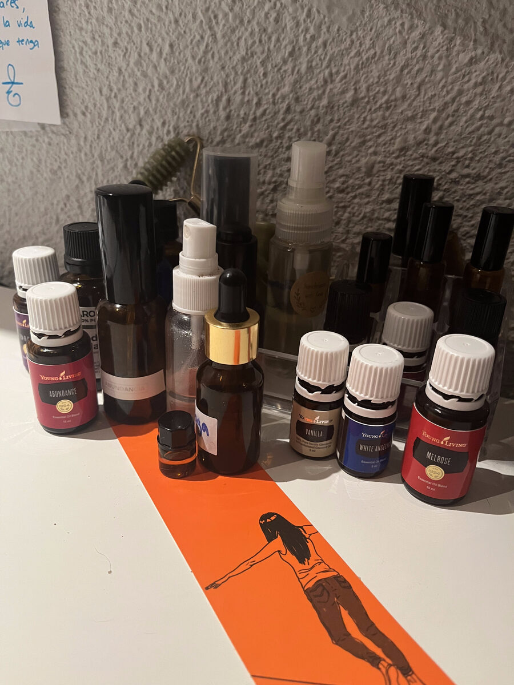

Sprays de aromaterapia para sintonizar tu día
Descubrí la aromaterapia hace años y, desde entonces, forma parte de mis pequeños rituales cotidianos.
No busco cambiar cómo me siento. Busco acompañarme mejor en cada momento.
Hay mañanas en las que necesito calma. Otras, claridad. Otras, simplemente un impulso de energía antes de empezar el día.
Como convivo con gatos, no utilizo difusores de aceites esenciales en casa. En su lugar preparo pequeños sprays aromáticos que llevo siempre conmigo al trabajo. Antes de salir, elijo el que más necesito ese día, respiro profundamente tres veces y dejo que el aroma me recuerde la intención con la que quiero vivir esa jornada.

No sé si la magia está solo en los aceites.
Creo que también está en el momento que nos regalamos para respirar, escucharnos y elegir cómo queremos empezar el día.
Mis tres mezclas

🌸 Volver a mí
Cuando necesito bajar el ruido y volver a escucharme.
- 8 gotas de neroli
- 6 gotas de incienso
- 4 gotas de bergamota
- Un chorrito de alcohol de 90º
- Completar con agua destilada o agua floral de azahar
Intención
"Hoy elijo escucharme antes que al ruido."
⸻
☀️ Luz
Cuando necesito empezar el día con energía y alegría.
- 8 gotas de pomelo
- 6 gotas de mandarina
- 3 gotas de limón
- 2 gotas de menta
- Un chorrito de alcohol de 90º
- Completar con agua destilada
Intención
"Que mi energía nazca de la alegría y no de la prisa."
⸻
🌳 Raíces
Para los días en los que necesito sentirme centrada y sostenida.
- 6 gotas de cedro
- 5 gotas de incienso
- 4 gotas de sándalo
- 3 gotas de pachulí
- Un chorrito de alcohol de 90º
- Completar con agua destilada
Intención
"Estoy aquí. Estoy presente."
Mi truco del almendruco: desde que volví de Glastonbury cargada de agua del Chalice Well, la uso para preparar mis sprays. ¡Los hace aún más poderosos!